MyHome Portal インストール手順
XAMPP(Apache／MySQL／PHP) とMyHome Portalのインストール手順です。
以下、Windowsの場合です。
XAMPPとMyHome Portalのインストールにかかる時間はおよそ30分程度です(XAMPPを使えば、Apache,MySQL,PHP一式を簡単に一括インストールできます)。実運用環境構築まで含めて1時間程度です。実運用環境のカスタマイズには2,3時間程度かかるかもしれません。
XAMPP (Apache／MySQL／PHP) インストール
- XAMPPダウンロード
- XAMPPを次のサイトからダウンロードしてください。インストーラタイプをダウンロードしてください。
http://www.apachefriends.org/jp/xampp-windows.html - XAMPPの最新バージョンでも動作すると思いますが、XAMPP 1.7.2以降ではインストーラが日本語対応になっていない等、以前のバージョンとかなり違いがあるようです。
http://sourceforge.net/projects/xampp/files/XAMPP%20Windows/
XAMPP 1.7.1
+ Apache 2.2.11
+ MySQL 5.1.33 (Community Server)
+ PHP 5.2.9 + PEA
- Windows 10 で、XAMPP 1.8.3 で実績あり。（おすすめ）
XAMPP 1.8.3
+ Apache 2.4.10
+ MySQL 5.6.20
+ PHP 5.5.15
-
参考：XAMPPバージョン
※ MySQLがOracle社に買収された後、オープンソースのコミュニティベースでの開発を継続するために、MySQLと高い互換性を持つMariaDBが採用されるようになった。XAMPP 1.8.3 XAMPP 5.x / 7.x / 8.x 公開年 2013年頃 2015年以降～現在 PHPバージョン PHP 5.5.x PHP 7.x～8.x（最新版では8.2～8.3） MySQL / MariaDB MySQL 5.6 系 MariaDB 10.x 系（MySQL互換） Apache Apache 2.4.x Apache 2.4.x（継続更新） phpMyAdmin 4.0 系 5.x 系（UI・セキュリティ向上） OpenSSL 1.0系 1.1～3.x（TLS1.3対応など） 対応OS Windows XP～8 Windows 10～11 / macOS / Linux対応 開発目的 PHP5系の古いサイト互換 PHP7～8向け最新開発環境
- XAMPPを次のサイトからダウンロードしてください。インストーラタイプをダウンロードしてください。
- XAMPPインストール
- インストールディレクトリを「D:\xampp」として、説明します。
- インストーラをダブルクリックで実行してください。
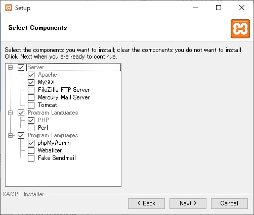 - 「xampp/xampp-control.exe」のプロパティを開いて、「管理者として実行」するように設定します。
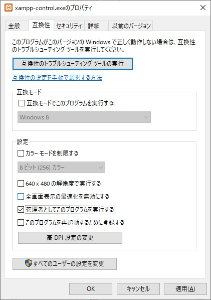 - XAMPPコントロールパネルを開きます。
- Apache, MySQLのサービスにチェックを入れて「Start」します。
最初、エラーが出ますが、10分程してからやり直すと正常に起動します。
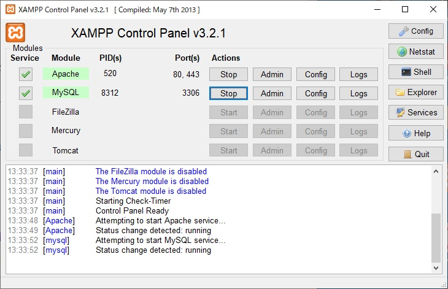 - 「ポート80または443（SSL)はすでに利用されています。Apacheをサービスとしてインストールするのに失敗しました。」というメッセージが表示される場合は、以下のサイトが参考になります。
XAMPPのインストール・エラーの対処方法
- XAMPP動作確認
- ブラウザで、http://localhost/と入れて初期画面を表示します。表示されたページで「日本語」を選択します。
- 以下のような画面が表示されればOKです。最初は日本語で表示されないかもしれませんが、いつの間にか（？）日本語が表示されるようになります。
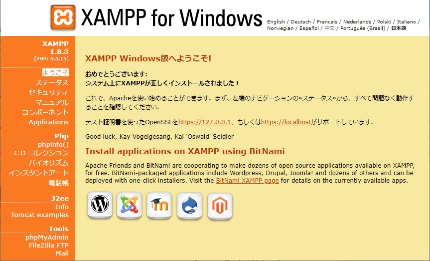
- MySQL root パスワード設定
- ブラウザで、http://localhost/security/index.phpと入れてMySQL設定画面を表示します。「日本語」が見つからなければとりあえず「English」を選択します。設定完了後、いつのまにか（？）日本語が表示されるようになります。
- ブラウザで、http://localhost/security/xamppsecurity.phpと入れてMySQLパスワード設定画面を表示します。
rootのパスワードを「kanri789」として説明します。
「PhpMyAdmin authentification:」は「cookie」を選択してください。
- Windowsシステム環境変数設定
- Windowsマイコンピュータのプロパティの環境変数で、システム環境変数Pathに「;D:\xampp\mysql\bin」を追加します。環境変数を追加した後、Windowsを再起動してください。
MyHome Portal インストール
- MyHome Portal インストール
- ダウンロードファイル「_myhome_XXX.zip」を解凍します。
- インストールディレクトリを「D:\xampp\htdocs」として、説明します。
- 解凍フォルダ以下の「_myhome」、「_mobile」を、フォルダごと「D:\xampp\htdocs」の下に入れます。
「_mobile」は、スマートフォン用の用のカレンダースケジュール表示、RSSリーダー、チャットのサンプルです。実機での検証はしていません。不要な場合は入れる必要はありません。
- MyHome Portal バージョンアップ
- バージョンアップは、新しいバージョンの解凍ファイルのフォルダ「_myhome」を、既存の「D:\xampp\htdocs\_myhome」と丸ごと置き換えるか、丸ごと上書きしてください。サンプルモードのまま運用していない場合は、古い不要ファイルを残さないために、丸ごと置き換えをお勧めします。念のため、古いバージョンの_myhomeをリネームしてしばらく残すこともお勧めします。定義ファイルの設定によっては、_myhome/_attachフォルダに登録された添付ファイルが残っている可能性もあります。
MySQLデータベースの追加や変更がない限りは、これだけでバージョンアップされます。
- バージョンアップは、新しいバージョンの解凍ファイルのフォルダ「_myhome」を、既存の「D:\xampp\htdocs\_myhome」と丸ごと置き換えるか、丸ごと上書きしてください。サンプルモードのまま運用していない場合は、古い不要ファイルを残さないために、丸ごと置き換えをお勧めします。念のため、古いバージョンの_myhomeをリネームしてしばらく残すこともお勧めします。定義ファイルの設定によっては、_myhome/_attachフォルダに登録された添付ファイルが残っている可能性もあります。
- サンプルDB登録：方法1 （サンプルDB自動セットアップツールを使う方法）
- サンプルDBを一括登録します。
【サンプルDB名一覧】_db_account _db_index _db_calendar _db_memo _db_email _db_guide _db_bbs _db_rss _db_chat _db_study _db_abook _db_diary _db_sticky _db_kakeibo _db_photo _db_svg _db_draw _db_psketch _db_gpslog _db_zid_mgr_a _db_zid_mgr_b
- ブラウザで、http://localhost/_myhome/setup-sample.phpを開いてください。
- ※ Linuxの場合、URLパラメーターでmysqlのディレクトリ・パスを以下のように指定してください。(Ver.5.17以降)
例）http://localhost/_myhome/setup-sample.php?mysql=/opt/lampp/bin
Linuxインストール補足(メモ書き)：MyHome PortalをVine Linuxにインストール - MySQL管理者のユーザー名(通常root)、パスワード、_myhomeインストールディレクトリを入れて、開始ボタンを押してください。
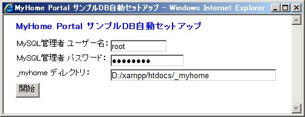
- サンプルDBを一括登録します。
- サンプルDB登録：方法2 （コマンドプロンプトで手動でセットアップする方法）
- 「D:\xampp\htdocs\_myhome\db_restore.txt.php」ファイルに従って、MySQLサンプルDBを登録します。
- MySQL管理者rootのパスワードを「kanri789」として説明します。
- テキストエディタを使って「db_restore.txt.php」の中の文字列「パスワード」を「kanri789」に置換します。(次項の「UTF-8N対応テキストエディタの準備」を参照。)
- 「リストア、ビュー作成、ユーザーアカウント作成」の手順をWindowsコマンドプロンプトで実行します。
- MyHome Portal 動作確認（サンプルモード）
- ブラウザで、http://localhost/_myhome/と入れてMyHome Portalを立ち上げます。
- アカウント名「tarou」パスワード「demo」でログインしてください。
- MyHome Portalトップページが表示されればOKです。
- カレンダー、メモ等の入力や修正ができることを確認してください。
- PHPのタイムゾーン設定 【重要】
-
XAMPPのバージョンによって、PHPのタイムゾーンがEurope/Berlinになっているようなので、この場合、Asia/Tokyoに修正する必要があります。
タイムゾーン設定値は、
http://localhost/xampp/phpinfo.php
で確認できます。「Default timezone」が、「Asia/Tokyo」になっていれば、そのままで支障ありません。
php.ini(Dドライブインストールの場合→D:\xampp\php\php.ini)を修正します。以下のように、date.timezoneを設定してください。 ※ MyHome Portal「ID管理」を既に利用中の場合、タイムゾーンを変更すると、登録したIDやパスワードが文字化けします。date.timezone = Europe/Berlin ↓↓↓ date.timezone = Asia/Tokyo
修正した後は、Apacheの再起動をする必要があります。
MyHome Portal 実運用環境 構築
- UTF-8N対応テキストエディタの準備
- MyHome PortalのPHPファイルは、文字コードがUTF-8Nになっています(「_mobile」はShift-JISです)。定義ファイル等のテキストファイル編集にはUTF-8対応テキストエディタが必要です。Windowsアクセサリのメモ帳(NotePad)は、UTF-8対応です。
- 私は、TeraPadを使っています。以下からダウンロードできます。
http://www5f.biglobe.ne.jp/~t-susumu/ - TeraPadのオプションの「拡張子」で「HTML」に「;*.php」を追加すると、PHPソースのHTML部分が色表示されます。
MyHome Portalでは、HTMLインラインコーディングを基本にしていますので、こうすることでHTML部分とPHPロジック部分が認識しやすくなります。
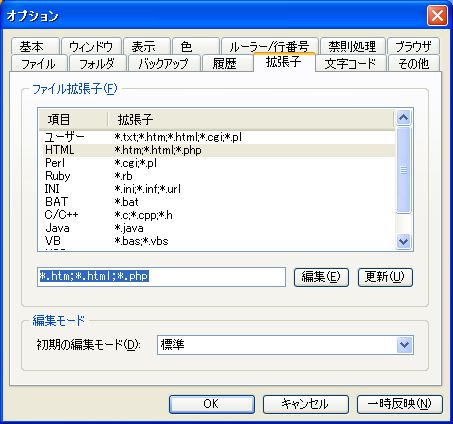
- ディレクトリ作成
- 実運用環境のディレクトリを作成します。
- 以下の構成にする前提で説明します。
/htdocs/_myhome_myset (実運用環境ディレクトリ) /htdocs/_myhome_myset/_my_calendar_images (カレンダーアイコンフォルダ) /htdocs/_blog-parts (トップページ用ブログパーツフォルダ) /htdocs/_attach (添付ファイル格納場所)
- Windowsコマンドプロンプトで以下を実行してディレクトリを作成します。
D: cd "D:\xampp\htdocs" mkdir D:\xampp\htdocs\_blog-parts mkdir D:\xampp\htdocs\_attach mkdir D:\xampp\htdocs\_attach\abook mkdir D:\xampp\htdocs\_attach\bbs mkdir D:\xampp\htdocs\_attach\calendar mkdir D:\xampp\htdocs\_attach\diary mkdir D:\xampp\htdocs\_attach\diary_marker mkdir D:\xampp\htdocs\_attach\memo mkdir D:\xampp\htdocs\_attach\gpslog mkdir D:\xampp\htdocs\_attach\csv-import mkdir D:\xampp\htdocs\_attach\excel-import mkdir D:\xampp\htdocs\_attach\excel-graph mkdir D:\xampp\htdocs\_myhome_myset mkdir D:\xampp\htdocs\_myhome_myset\_my_calendar_images
- ディレクトリ内のファイルがブラウザから見えなくするために、「D:\xampp\htdocs\_myhome\.htaccess」を「D:\xampp\htdocs\_myhome_myset」と「D:\xampp\htdocs\_attach」の下にコピーしてください。
copy D:\xampp\htdocs\_myhome\.htaccess D:\xampp\htdocs\_myhome_myset copy D:\xampp\htdocs\_myhome\.htaccess D:\xampp\htdocs\_attach
- ブログパーツをサンプルデータからコピーします。コマンドプロンプトで以下を実行してください。
copy D:\xampp\htdocs\_myhome\blog-parts\* D:\xampp\htdocs\_blog-parts
- カレンダーアイコンファイルをサンプルデータからコピーします。コマンドプロンプトで以下を実行してください。
◆ サンプルデータと同じアイコンセットを使う場合。copy D:\xampp\htdocs\_myhome\calendar\images\* D:\xampp\htdocs\_myhome_myset\_my_calendar_images
◆ アイコン名の頭に数字をつけて、種類別に並ぶようにしたアイコンセットを使う場合。(こちらをお勧めします。) (「MyHome Portal 実運用環境 カスタマイズ ＞ Ⅱ.カレンダーアイコンの変更」を参照)copy D:\xampp\htdocs\_myhome\実運用サンプル\_my_calendar_images\* D:\xampp\htdocs\_myhome_myset\_my_calendar_images
- 実運用定義ファイルの作成と編集
- 定義ファイルサンプルを実運用環境ディレクトリ(/htdocs/_myhome_myset)にコピーします。
copy D:\xampp\htdocs\_myhome\__define_common_my_sample.php D:\xampp\htdocs\_myhome_myset\__define_common_my.php
- 定義ファイル「D:\xampp\htdocs\_myhome_myset\__define_common_my.php」の必要な箇所修正をしてください。定義ファイルの中で、★★★が付いている箇所は、必ずチェックしてください。UTF-8対応のテキストエディタが必要です。
- MyHome Portal用MySQLユーザー名、パスワードを設定してください。
define("_DB_USERNAME", "myhome"); define("_DB_PASSWORD", "pass123");
- 企業内イントラなど、プロキシ経由の環境では、プロキシサーバの設定をしてください。RSSリーダー、一部のGoogleマップを利用しているページ(サーバーサイドで、Google Maps API Web サービスを利用しているため)、ツールの「HTML URL抽出&ファイルダウンロード」、「HTML テキスト抽出&メール送信」で必要です。
define("HTTP_PROXY_HOST", ""); // HTTP プロキシサーバ アドレス define("HTTP_PROXY_PORT", ""); // HTTP プロキシサーバ ポート - 定義ファイルサンプルを実運用環境ディレクトリ(/htdocs/_myhome_myset)にコピーします。
- ID管理の暗号化用文字列も修正することをお勧めします。運用開始後は絶対に修正してはいけません。実運用定義ファイルは必ずバックアップを取ってください。暗号化用文字列が失われると、ID管理のパスワードなどの情報を復元できなくなります。バージョンアップの際にも、ご注意ください。
define("_DB_ANGOUKA_KEY", "YUihdYZYUihdmUwNZmsihshYZYUhdsihZYUiYUwNZsidsihYsiihYZYUihdYNZYUidsihYmw"); - ID管理の暗号化を2重に行う場合、_DB_ANGOUKA_KEY_EORのコメントアウトを外してください。キーコードは必ず修正すること。利用開始後は絶対に修正してはいけません。
define("_DB_ANGOUKA_KEY_EOR", "OpenSesame123"); - ツール「ファイル暗号化」「実運用環境バックアップで暗号化」を使う場合、FILE_MANAGER_CIPHER_SEEDのコメントアウトを外してください。キーコードは必ず修正すること。利用開始後は絶対に修正してはいけません。
ファイル暗号化には、PHPのCrypt_Blowfishを使っています。XAMPPのバージョンによっては、Crypt_Blowfishがインストールされません。 /xampp/php/PEAR/Crypt/Blowfish.phpがインストールされている事を確認の上、設定してください。define("FILE_MANAGER_CIPHER_SEED", "HirakeGoma789"); - 実運用DBの作成
- MySQLを一旦停止します。コマンドプロンプトで次のコマンドを入力するか、XAMPPコントロールパネルを使って停止してください。
net stop mysql
- サンプルデータベースを名前を変えてコピーすることで実運用DBを作成します。
データベース名の頭を、「_db_」から「_mydb_」にする例です。コマンドプロンプトで以下を実行してください。mkdir D:\xampp\mysql\data\_mydb_account mkdir D:\xampp\mysql\data\_mydb_calendar mkdir D:\xampp\mysql\data\_mydb_index mkdir D:\xampp\mysql\data\_mydb_memo mkdir D:\xampp\mysql\data\_mydb_email mkdir D:\xampp\mysql\data\_mydb_bbs mkdir D:\xampp\mysql\data\_mydb_rss mkdir D:\xampp\mysql\data\_mydb_chat mkdir D:\xampp\mysql\data\_mydb_study mkdir D:\xampp\mysql\data\_mydb_abook mkdir D:\xampp\mysql\data\_mydb_diary mkdir D:\xampp\mysql\data\_mydb_sticky mkdir D:\xampp\mysql\data\_mydb_kakeibo mkdir D:\xampp\mysql\data\_mydb_photo mkdir D:\xampp\mysql\data\_mydb_svg mkdir D:\xampp\mysql\data\_mydb_draw mkdir D:\xampp\mysql\data\_mydb_psketch mkdir D:\xampp\mysql\data\_mydb_gpslog mkdir D:\xampp\mysql\data\_mydb_zid_mgr_a mkdir D:\xampp\mysql\data\_mydb_zid_mgr_b copy D:\xampp\mysql\data\_db_account\* D:\xampp\mysql\data\_mydb_account copy D:\xampp\mysql\data\_db_calendar\* D:\xampp\mysql\data\_mydb_calendar copy D:\xampp\mysql\data\_db_index\* D:\xampp\mysql\data\_mydb_index copy D:\xampp\mysql\data\_db_memo\* D:\xampp\mysql\data\_mydb_memo copy D:\xampp\mysql\data\_db_email\* D:\xampp\mysql\data\_mydb_email copy D:\xampp\mysql\data\_db_bbs\* D:\xampp\mysql\data\_mydb_bbs copy D:\xampp\mysql\data\_db_rss\* D:\xampp\mysql\data\_mydb_rss copy D:\xampp\mysql\data\_db_chat\* D:\xampp\mysql\data\_mydb_chat copy D:\xampp\mysql\data\_db_study\* D:\xampp\mysql\data\_mydb_study copy D:\xampp\mysql\data\_db_abook\* D:\xampp\mysql\data\_mydb_abook copy D:\xampp\mysql\data\_db_diary\* D:\xampp\mysql\data\_mydb_diary copy D:\xampp\mysql\data\_db_sticky\* D:\xampp\mysql\data\_mydb_sticky copy D:\xampp\mysql\data\_db_kakeibo\* D:\xampp\mysql\data\_mydb_kakeibo copy D:\xampp\mysql\data\_db_photo\* D:\xampp\mysql\data\_mydb_photo copy D:\xampp\mysql\data\_db_svg\* D:\xampp\mysql\data\_mydb_svg copy D:\xampp\mysql\data\_db_draw\* D:\xampp\mysql\data\_mydb_draw copy D:\xampp\mysql\data\_db_psketch\* D:\xampp\mysql\data\_mydb_psketch copy D:\xampp\mysql\data\_db_gpslog\* D:\xampp\mysql\data\_mydb_gpslog copy D:\xampp\mysql\data\_db_zid_mgr_a\* D:\xampp\mysql\data\_mydb_zid_mgr_a copy D:\xampp\mysql\data\_db_zid_mgr_b\* D:\xampp\mysql\data\_mydb_zid_mgr_b
- MySQLを再起動します。コマンドプロンプトで次のコマンドを入力するか、XAMPPコントロールパネルで「開始」を押してください。
net start mysql
- MySQLを一旦停止します。コマンドプロンプトで次のコマンドを入力するか、XAMPPコントロールパネルを使って停止してください。
- データベースのビューを作成します。コマンドプロンプトで以下を実行してください。
d: cd "D:\xampp\htdocs\_myhome\z_db_backup" mysql -u root -pkanri789 _mydb_account < create_view_mydb_account.txt mysql -u root -pkanri789 _mydb_index < create_view_mydb_index.txt mysql -u root -pkanri789 _mydb_calendar < create_view_mydb_calendar.txt mysql -u root -pkanri789 _mydb_memo < create_view_mydb_memo.txt mysql -u root -pkanri789 _mydb_email < create_view_mydb_email.txt mysql -u root -pkanri789 _mydb_bbs < create_view_mydb_bbs.txt mysql -u root -pkanri789 _mydb_rss < create_view_mydb_rss.txt mysql -u root -pkanri789 _mydb_chat < create_view_mydb_chat.txt mysql -u root -pkanri789 _mydb_study < create_view_mydb_study.txt mysql -u root -pkanri789 _mydb_abook < create_view_mydb_abook.txt mysql -u root -pkanri789 _mydb_diary < create_view_mydb_diary.txt mysql -u root -pkanri789 _mydb_kakeibo < create_view_mydb_kakeibo.txt mysql -u root -pkanri789 _mydb_svg < create_view_mydb_svg.txt mysql -u root -pkanri789 _mydb_draw < create_view_mydb_draw.txt mysql -u root -pkanri789 _mydb_psketch < create_view_mydb_psketch.txt mysql -u root -pkanri789 _mydb_gpslog < create_view_mydb_gpslog.txt mysql -u root -pkanri789 _mydb_zid_mgr_a < create_view_mydb_zid_mgr_a.txt
- ユーザーアカウントのアクセス権を設定します。サンプルデータと同じユーザー名の例です。コマンドプロンプトで以下を実行してください。
mysql -u root -pkanri789 GRANT SELECT,INSERT,UPDATE,DELETE ON _mydb_account.* TO myhome@localhost; GRANT SELECT,INSERT,UPDATE,DELETE ON _mydb_calendar.* TO myhome@localhost; GRANT SELECT,INSERT,UPDATE,DELETE ON _mydb_guide.* TO myhome@localhost; GRANT SELECT,INSERT,UPDATE,DELETE ON _mydb_index.* TO myhome@localhost; GRANT SELECT,INSERT,UPDATE,DELETE ON _mydb_memo.* TO myhome@localhost; GRANT SELECT,INSERT,UPDATE,DELETE ON _mydb_email.* TO myhome@localhost; GRANT SELECT,INSERT,UPDATE,DELETE ON _mydb_bbs.* TO myhome@localhost; GRANT SELECT,INSERT,UPDATE,DELETE ON _mydb_rss.* TO myhome@localhost; GRANT SELECT,INSERT,UPDATE,DELETE ON _mydb_chat.* TO myhome@localhost; GRANT SELECT,INSERT,UPDATE,DELETE ON _mydb_study.* TO myhome@localhost; GRANT SELECT,INSERT,UPDATE,DELETE ON _mydb_abook.* TO myhome@localhost; GRANT SELECT,INSERT,UPDATE,DELETE ON _mydb_diary.* TO myhome@localhost; GRANT SELECT,INSERT,UPDATE,DELETE ON _mydb_sticky.* TO myhome@localhost; GRANT SELECT,INSERT,UPDATE,DELETE ON _mydb_kakeibo.* TO myhome@localhost; GRANT SELECT,INSERT,UPDATE,DELETE ON _mydb_photo.* TO myhome@localhost; GRANT SELECT,INSERT,UPDATE,DELETE ON _mydb_svg.* TO myhome@localhost; GRANT SELECT,INSERT,UPDATE,DELETE ON _mydb_draw.* TO myhome@localhost; GRANT SELECT,INSERT,UPDATE,DELETE ON _mydb_psketch.* TO myhome@localhost; GRANT SELECT,INSERT,UPDATE,DELETE ON _mydb_gpslog.* TO myhome@localhost; GRANT SELECT,INSERT,UPDATE,DELETE ON _mydb_zid_mgr_a.* TO myhome@localhost; GRANT SELECT,INSERT,UPDATE,DELETE ON _mydb_zid_mgr_b.* TO myhome@localhost; FLUSH PRIVILEGES; exit;
- MyHome Portal 動作確認
- ブラウザで、http://localhost/_myhome/と入れてMyHome Portalの動作確認をします。
- アカウント名「tarou」パスワード「demo」でログインしてください。
- MyHome Portalの「ID管理」で、サンプルデータが文字化けします。暗号化用文字列が違うため、これが正常です。
- http://localhost/_myhome/db_tool/mysql-database.phpで、DBスキーマの確認ができます。
- MyHome Portal ユーザー登録
- MyHome Portal「ユーザー一覧」→「一括修正/追加/削除」で、サンプルデータのアカウント名、ハンドル名、パスワードを修正する方法で初期ユーザーを登録してください。システム管理者権限の付いているアカウント「tarou」を、自分用に修正して使ってください。権限の「admin」はそのまま付けておいてください。
- 「ログアウト/管理」で一旦「ログアウト」し、新しいユーザー名で再「ログイン」してください。
- 「My設定」→「アカウント情報修正」「ID管理パスワード修正」で、その他のユーザー情報を修正してください。
- サンプルデータからコピーした実運用データベースのデータ削除
- サンプルデータからコピーした実運用データベースのデータを削除します。
INDEXのサンプルデータを削除する例です。コマンドプロンプトで以下を実行してください。mysql -u root -pkanri789 use _mydb_index; truncate table m_category; truncate table m_homepage; exit;
カレンダーのサンプルデータを削除する例です。コマンドプロンプトで以下を実行してください。mysql -u root -pkanri789 use _mydb_calendar; truncate table m_category; truncate table m_schedule; exit;
掲示板のサンプルデータを削除する例です。コマンドプロンプトで以下を実行してください。mysql -u root -pkanri789 use _mydb_bbs; truncate table m_bbs; truncate table m_category; exit;
RSSのサンプルデータを削除する例です。コマンドプロンプトで以下を実行してください。mysql -u root -pkanri789 use _mydb_rss; truncate table m_category; truncate table m_rss; exit;
メモのサンプルデータを削除する例です。コマンドプロンプトで以下を実行してください。mysql -u root -pkanri789 use _mydb_memo; truncate table m_category; truncate table m_memo; exit;
学習のサンプルデータを削除する例です。コマンドプロンプトで以下を実行してください。mysql -u root -pkanri789 use _mydb_study; truncate table m_mycheck; truncate table m_study; truncate table m_category; truncate table m_category2; exit;
住所録のサンプルデータを削除する例です。コマンドプロンプトで以下を実行してください。mysql -u root -pkanri789 use _mydb_abook; truncate table m_abook; truncate table m_category; truncate table m_check_caption; exit;
旅行記のサンプルデータを削除する例です。コマンドプロンプトで以下を実行してください。mysql -u root -pkanri789 use _mydb_diary; truncate table m_schedule; truncate table m_category; truncate table m_marker; exit;
付箋のサンプルデータを削除する例です。コマンドプロンプトで以下を実行してください。mysql -u root -pkanri789 use _mydb_sticky; truncate table m_notes; truncate table m_category; exit;
お絵かきのサンプルデータを削除する例です。コマンドプロンプトで以下を実行してください。mysql -u root -pkanri789 use _mydb_svg; truncate table m_svg; truncate table m_comment; exit;
ペン画のサンプルデータを削除する例です。コマンドプロンプトで以下を実行してください。mysql -u root -pkanri789 use _mydb_draw; truncate table m_draw; truncate table m_comment; exit;
physicSketchのサンプルデータを削除する例です。コマンドプロンプトで以下を実行してください。mysql -u root -pkanri789 use _mydb_psketch; truncate table m_psketch; truncate table m_comment; exit;
(簡易) 預貯金管理のサンプルデータを削除する例です。コマンドプロンプトで以下を実行してください。mysql -u root -pkanri789 use _mydb_kakeibo; truncate table m_chokin; truncate table m_ginkou; exit;
チャットのサンプルデータを削除する例です。コマンドプロンプトで以下を実行してください。mysql -u root -pkanri789 use _mydb_chat; truncate table m_messages; exit;
ID管理のサンプルデータを削除する例です。コマンドプロンプトで以下を実行してください。mysql -u root -pkanri789 use _mydb_zid_mgr_a; truncate table m_category; truncate table m_pass; use _mydb_zid_mgr_b; truncate table m_pass2; exit;
ログインログデータを削除する例です。コマンドプロンプトで以下を実行してください。mysql -u root -pkanri789 use _mydb_account; truncate table z_loginlog; exit;
- サンプルデータからコピーした実運用データベースのデータを削除します。
- DBのバックアップ
- 実運用DBをバックアップすることをお勧めします。バックアップはなるべく定期的に取ってください。
システム管理者用ツールとして、「実運用環境バックアップ」を用意しています。
http://localhost/_myhome/db_tool/backup-mydb.php
「実運用環境バックアップ」を使う場合、実運用定義ファイルの「BACKUP_MYDB_DIR_REAL」のコメントアウトを外して、適切なパスを指定してください。/xampp/htdocsの下は指定しないでください。xampp/htdoc以下のパス指定では、バックアップファイルがWeb経由でダウンロードできてしまいます。//define("BACKUP_MYDB_DIR_REAL", "D:/_myhome_backup"); //←優先(物理パス)手動でバックアップする場合、コマンドプロンプトで以下を実行してください。mkdir D:\xampp\htdocs\_myhome_myset\_mydb_backup mysqldump -u root -pkanri789 _mydb_account > "D:\xampp\htdocs\_myhome_myset\_mydb_backup\_mydb_account.bk.txt" mysqldump -u root -pkanri789 _mydb_index > "D:\xampp\htdocs\_myhome_myset\_mydb_backup\_mydb_index.bk.txt" mysqldump -u root -pkanri789 _mydb_calendar > "D:\xampp\htdocs\_myhome_myset\_mydb_backup\_mydb_calendar.bk.txt" mysqldump -u root -pkanri789 _mydb_memo > "D:\xampp\htdocs\_myhome_myset\_mydb_backup\_mydb_memo.bk.txt" mysqldump -u root -pkanri789 _mydb_email > "D:\xampp\htdocs\_myhome_myset\_mydb_backup\_mydb_email.bk.txt" mysqldump -u root -pkanri789 _mydb_bbs > "D:\xampp\htdocs\_myhome_myset\_mydb_backup\_mydb_bbs.bk.txt" mysqldump -u root -pkanri789 _mydb_rss > "D:\xampp\htdocs\_myhome_myset\_mydb_backup\_mydb_rss.bk.txt" mysqldump -u root -pkanri789 _mydb_chat > "D:\xampp\htdocs\_myhome_myset\_mydb_backup\_mydb_chat.bk.txt" mysqldump -u root -pkanri789 _mydb_study > "D:\xampp\htdocs\_myhome_myset\_mydb_backup\_mydb_study.bk.txt" mysqldump -u root -pkanri789 _mydb_abook > "D:\xampp\htdocs\_myhome_myset\_mydb_backup\_mydb_abook.bk.txt" mysqldump -u root -pkanri789 _mydb_diary > "D:\xampp\htdocs\_myhome_myset\_mydb_backup\_mydb_diary.bk.txt" mysqldump -u root -pkanri789 _mydb_sticky > "D:\xampp\htdocs\_myhome_myset\_mydb_backup\_mydb_sticky.bk.txt" mysqldump -u root -pkanri789 _mydb_kakeibo > "D:\xampp\htdocs\_myhome_myset\_mydb_backup\_mydb_kakeibo.bk.txt" mysqldump -u root -pkanri789 _mydb_photo > "D:\xampp\htdocs\_myhome_myset\_mydb_backup\_mydb_photo.bk.txt" mysqldump -u root -pkanri789 _mydb_svg > "D:\xampp\htdocs\_myhome_myset\_mydb_backup\_mydb_svg.bk.txt" mysqldump -u root -pkanri789 _mydb_draw > "D:\xampp\htdocs\_myhome_myset\_mydb_backup\_mydb_draw.bk.txt" mysqldump -u root -pkanri789 _mydb_psketch > "D:\xampp\htdocs\_myhome_myset\_mydb_backup\_mydb_psketch.bk.txt" mysqldump -u root -pkanri789 _mydb_gpslog > "D:\xampp\htdocs\_myhome_myset\_mydb_backup\_mydb_gpslog.bk.txt" mysqldump -u root -pkanri789 _mydb_zid_mgr_b > "D:\xampp\htdocs\_myhome_myset\_mydb_backup\_mydb_zid_mgr_b.bk.txt" mysqldump -u root -pkanri789 _mydb_zid_mgr_a > "D:\xampp\htdocs\_myhome_myset\_mydb_backup\_mydb_zid_mgr_a.bk.txt"
- 実運用DBをバックアップすることをお勧めします。バックアップはなるべく定期的に取ってください。
MyHome Portal 実運用環境 カスタマイズ
- 実運用定義ファイル
- 実運用定義ファイルで、MyHome Portalをカスタマイズできます。
D:\xampp\htdocs\_myhome_myset\__define_common_my.php
- （例）以下を修正することで、トップページの掲示板スレッド表示やスケジュール表示の枠カラーや表示件数を変更できます。
- ボタンデザインとトップページ検索ボタンのカスタマイズ
- ボタンデザインを変更できます。実運用定義ファイルで任意のCSSを設定できます。ボタンデザイン・サンプルとして、角丸タイプ、グラデーションタイプなど、数種類のCSSを用意しています。
define("_STYLE_SHEET_BUTTON", "../style/button/gradient.css");
オリジナルのCSSを作成して、ディレクトリ_myhome_myset等に置いて使用することもできます。
define("_STYLE_SHEET_BUTTON", "../../_myhome_myset/style/button/xxxxx.css"); - トップページ検索ボタンをカスタマイズできます。不要なボタンを外したり、順番を入れかえたりできます。HTMLとJavaScriptが少し分かる人なら、ボタンの追加など自由な編集が可能です。検索ボタンをカスタマイズする場合は、カスタマイズ用の検索ボタンモジュールをディレクトリにコピーします。__define_index_search_my_yahoo.phpはYahoo検索ボタンを先頭にしたタイプです。
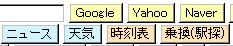
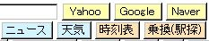copy D:\xampp\htdocs\_myhome\__define_index_search_my_google.php D:\xampp\htdocs\_myhome_myset\__define_index_search_my_google.php copy D:\xampp\htdocs\_myhome\__define_index_search_my_yahoo.php D:\xampp\htdocs\_myhome_myset\__define_index_search_my_yahoo.php
実運用定義ファイルの以下の部分を変更してください。_DEFINE_INDEX_SEARCH_MYで検索ボタンモジュールを指定してください。
// ★ index トップページ 検索ボタン定義ファイル define("_DEFINE_INDEX_SEARCH_MY", ""); // define("_DEFINE_INDEX_SEARCH_MY", "../../_myhome_myset/__define_index_search_my_google.php"); // define("_DEFINE_INDEX_SEARCH_MY", "../../_myhome_myset/__define_index_search_my_yahoo.php"); - ボタンデザインを変更できます。実運用定義ファイルで任意のCSSを設定できます。ボタンデザイン・サンプルとして、角丸タイプ、グラデーションタイプなど、数種類のCSSを用意しています。
- カレンダーアイコンの変更
- 「D:\xampp\htdocs\_myhome_myset\_my_calendar_images」のカレンダーアイコンを、好みに合わせて追加・削除してください。
- アイコンフォルダ内に拡張子.zzzのダミーファイルを入れると、カレンダースケジュール入力画面のアイコン挿入ボタン一覧を任意のところで改行できます。アイコン名の頭に数字をつけて、種類別に並ぶようにすることで、アイコン挿入ボタンを使いやすいように設定できます。(↓例)
165-star.gif 180-lens.gif 200.zzz ←ダミーファイル 231-man.gif
- 「D:\xampp\htdoc\_myhome\実運用サンプル\_my_calendar_images」内に、上記方法の実運用カレンダーアイコンセットも用意しました。
↓サンプルを使った、カレンダースケジュール入力画面です。
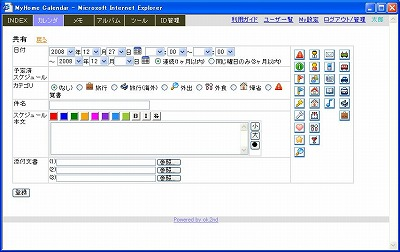 - カレンダーWebアイコンフォントの変更
- 「カレンダー」スケジュール入力画面のWebアイコンフォント・ボタンは以下のファイルで定義しています。
ファイル名は実用定義ファイルで、FONT_ICON_CLASS_INCLUDEで指定していますので、例えば、_myhome_mysetディレクトリの下に置いて、自分の使いたい任意のアイコンを設定できます。≪__common__/__define_font-icon.php≫ $font_icons = array(); $font_icons[] = '<ig class=icon-smile></ig>'; $font_icons[] = '<ir class=icon-frown></ir>'; $font_icons[] = '<ib class=icon-meh></ib>'; $font_icons[] = '<ib class=icon-male></ib>'; $font_icons[] = '<im class=icon-female></im>'; $font_icons[] = '◆'; // 改行
タグで色を変えられます。<style> ii { padding: 0 1px; font-size: 16px; } ir { padding: 0 1px; font-size: 16px; color: red; } ig { padding: 0 1px; font-size: 16px; color: green; } ・・・ - ツール「Font Awesome Webアイコンフォント サンプル」で、Webアイコンフォントとclass名が確認できます。
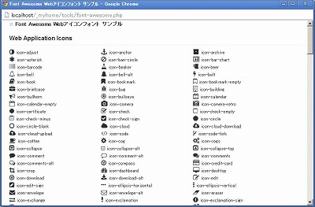
- 「カレンダー」スケジュール入力画面のWebアイコンフォント・ボタンは以下のファイルで定義しています。
- メインコンテンツの追加・削除
- コンテンツ定義ファイルサンプル「D:\xampp\htdocs\_myhome\__define_contents_my_sample.php」を実運用環境のディレクトリ「D:\xampp\htdocs\_myhome_myset」にコピーして、ファイル名を「__define_contents_my.php」にします。
copy D:\xampp\htdocs\_myhome\__define_contents_my_sample.php D:\xampp\htdocs\_myhome_myset\__define_contents_my.php
「D:\xampp\htdocs\_myhome_myset\__define_contents_my.php」を修正することで、メインコンテンツの追加・削除が行えます。
外部コンテンツをMyHome Portalのコンテンツとして組み込む例を示します。YouTubeを組み込むサンプルで説明します。
「D:\XAMPP\htdocs\_myhome\実運用サンプル\youtube」フォルダ一式と「D:\XAMPP\htdocs\_myhome\実運用サンプル\icon」フォルダ一式を「D:\XAMPP\htdocs\_myhome_myset」の下にコピーします。mkdir D:\xampp\htdocs\_myhome_myset\youtube mkdir D:\xampp\htdocs\_myhome_myset\icon copy D:\XAMPP\htdocs\_myhome\実運用サンプル\youtube D:\xampp\htdocs\_myhome_myset\youtube copy D:\XAMPP\htdocs\_myhome\実運用サンプル\icon D:\xampp\htdocs\_myhome_myset\icon
「D:\xampp\htdocs\_myhome_myset\__define_contents_my.php」に、次の1行を追加します。
サンプル「__define_contents_my_sample.php」には、最初から入っています。$navi_item[] = array("href"=>"../_myhome_myset/youtube/", "query"=>"", "name"=>"YouTube");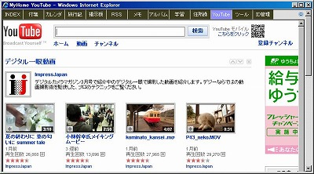 - ツール「GPSログ View」を、メインコンテンツにする方法
- 「GPSログ View」をメインコンテンツにする場合、以下を設定してください。
・実運用定義ファイル __define_contents_my.phpに、以下を追加してください。$navi_item[] = array("href"=>"gpslog/", "query"=>"arg=session", "name"=>"GPSログ");・実運用定義ファイル __define_common_my.phpに、以下を追加してください。define("gpslog_PAGE_HEADER", "YES");
- 「GPSログ View」をメインコンテンツにする場合、以下を設定してください。
- トップページのブログパーツ/RSSリーダー設定
- トップページ右側に任意のブログパーツを貼り付けることができます。
- ブログパーツディレクトリ「D:\XAMPP\htdocs\_blog-parts」に、ブログパーツのテキストファイルを入れます。ファイルの拡張子は、incが適当かと思います。
- ブログパーツとしてRSS記事表示もできます。_myhome/blog-parts/rss-google-news.incをコピー&ペーストして任意のRSSを設定できます。
- MyHome Portal定義ファイル「D:\XAMPP\htdocs\_myhome_myset\__define_common_my.php」でブログパーツファイルを設定します。以下は設定サンプルです。
define("BLOG_PARTS_SCRIPT_TOP1_index", ""); // 右カレンダーの上 define("BLOG_PARTS_SCRIPT_TOP2_index", ""); // 右カレンダーの上 define("BLOG_PARTS_SCRIPT_BOTTOM1_index", "yahoo-news.inc"); // 右カレンダーの下 define("BLOG_PARTS_SCRIPT_BOTTOM2_index", ""); // 右カレンダーの下 define("BLOG_PARTS_SCRIPT_RIGHT1_index", "clock-simple-blue.inc"); // 右カレンダーの右 define("BLOG_PARTS_SCRIPT_RIGHT2_index", "weather-yahoo.inc"); // 右カレンダーの右 define("BLOG_PARTS_SCRIPT_RIGHT3_index", "fx-news.inc"); // 右カレンダーの右 define("BLOG_PARTS_SCRIPT_RIGHT4_index", ""); // 右カレンダーの右 - アルバムの表示ディレクトリ設定
- アルバムの表示ディレクトリを設定します。
定義ファイル「D:\XAMPP\htdocs\_myhome_myset\__define_common_my.php」で設定します。アルバムの表示ディレクトリ制限photo_LIMITED_IMAGES_FOLDERを指定すると、こちらが有効になり、指定ディレクトリおよびその下以外には移動できなくなります。システム管理者のみ、このディレクトリ制限をはずすこともできます。パスのディレクトリ区切り文字は、\でなく必ず/を使ってください。
define("photo_DEFAULT_IMAGES_FOLDER", "D:/Temp"); .... define("photo_LIMITED_IMAGES_FOLDER", "D:/デジカメ写真"); // アルバムの表示ディレクトリ制限 define("photo_LIMITED_ADMIN_NOLIMIT", "YES"); // システム管理者のみ制限をはずす場合は"YES" - アルバムの表示ディレクトリを設定します。
- カレンダー連携のアルバムフォルダは、My設定のカレンダーアルバムフォルダで設定してください。
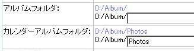
カレンダーアルバムフォルダを、このように設定した場合、以下のような階層で写真を管理することで、カレンダーでアルバムの写真を表示できます。写真をクリックするとアルバムフォルダに移動します。D:/Album/Photos/2009/ D:/Album/Photos/2009/2009-01-11-京都 D:/Album/Photos/2009/2009-02-15-伊豆
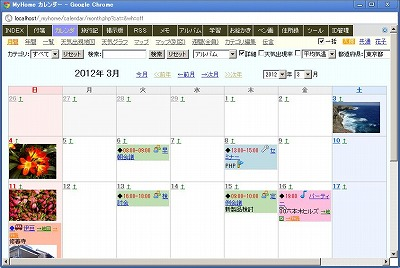 - アルバムの動画サムネイル表示設定（ffmpegインストール）
- アルバムの動画サムネイル表示、動画時間分割、mpg,mov,m2ts(AVCHD)の動画再生機能を使う場合、ffmpegがインストールされている必要があります。
ffmpegは、「お気に入りの動画を携帯で見よう(http://blog.k-tai-douga.com/)」から、Windows用バイナリをダウンロードしてインストールするのが手っ取り早いです。
Windowsのシステム環境変数Pathにffmpegのインストールディレクトリを追加してください。
(例:「;C:\Program Files\ffmpeg」)
環境変数追加後に、Windowsを再起動してください。 - 動画をサムネイル表示する場合は、定義ファイル「D:\XAMPP\htdocs\_myhome_myset\__define_common_my.php」で、photo_VIDEO_FFMPEGを"YES"にしてください。
define("photo_VIDEO_FFMPEG", "YES"); - mpg,mov,m2tsの動画再生は、FLVに変換して再生します。動画フォルダの下に「___flv___」フォルダを作成して、変換したFLVを保管します。
- アルバムの動画サムネイル表示、動画時間分割、mpg,mov,m2ts(AVCHD)の動画再生機能を使う場合、ffmpegがインストールされている必要があります。
- アルバムのJPEG画像の縮小機能設定（IrfanViewインストール）
- デジカメで撮影した写真等の解像度の高い画像を、そのままアルバム表示すると非常に時間がかかります。MyHome Portalでは、縮小画像を生成して画像表示を高速化できます。
アルバムの画像表示高速化のためのJPEG画像縮小機能を使う場合、「IrfanView」と「IrFanView Graphic Viewer PlugIns(拡張プラグイン全DLL収録版)」がインストールされている必要があります。以下からダウンロードしてインストールしてください。
http://www.irfanview.com/
http://www.forest.impress.co.jp/lib/pic/piccam/picviewer/irfanview.html
Windowsのシステム環境変数PathにIrfanViewのインストールディレクトリを追加してください。
(例:「;C:\Program Files\IrfanView」)
環境変数追加後に、Windowsを再起動してください。 - JPEG画像の縮小機能を使う場合は、定義ファイル「D:\XAMPP\htdocs\_myhome_myset\__define_common_my.php」で、photo_JPEG_RESIZEを"YES"にしてください。
define("photo_JPEG_RESIZE", "YES"); - JPEG縮小機能を使う設定にした場合、各画像フォルダの下に「___small___」「___thumb___」フォルダを作成して、アルバム表示用縮小画像とスライドショー下の小さなサムネイル画像を保管します。
-
生成する縮小画像の大きさは、実運用定義ファイルで指定できます。
define("photo_RESIZE_SIZE_SMALL", 1200); //アルバム 縮小画像のサイズ define("photo_RESIZE_SIZE_THUMB", 160); //アルバム スライド下のサムネイルサイズ - JPEG画像の縮小機能は、Windows XPでは、日本語のファイルパスでは正常動作しない可能性があります。そのため、アルバムの縮小画像生成が出来ません。
- JPEG縮小機能を使う設定にした場合、EXIF対応デジカメで縦位置した画像は自動的に縦位置表示されます。
- JPEG画像一括縮小に「EXIF縦位置画像回転」機能もあります。EXIF対応デジカメで縦位置した画像を、WindowsエクスプローラやEXIF未対応ソフトでも縦位置表示できるようになります。ただ、Windowsエクスプローラのサムネイルは縦位置表示にならない場合もあります。
この回転処理はロスレス(無劣化)で行われますが、画像以外の何らかの属性情報が失われる可能性があります。ファイル更新日は保存されます。
この機能を使う場合、実運用定義ファイルでphoto_EXIF_AUTO_ROTATEを"YES"にしてください。
define("photo_EXIF_AUTO_ROTATE", "YES");
- デジカメで撮影した写真等の解像度の高い画像を、そのままアルバム表示すると非常に時間がかかります。MyHome Portalでは、縮小画像を生成して画像表示を高速化できます。
- アルバムの画像処理機能設定（ImageMagickインストール）
- アルバムの画像処理機能を使う場合、ImageMagickがインストールされている必要があります。
http://www.imagemagick.org/script/index.php
から、環境にあったパッケージをダウンロードしてインストールしてください。
例：ImageMagick-6.6.6-1-Q16-windows-dll.exe
（ImageMagickオプション参考：http://hashi4.civil.tohoku.ac.jp/soft/node43.html）
ImageMagickをインストール直後は、Windowsを再起動しないと、この機能を利用できません。
- この画像処理機能を使う場合、実運用定義ファイルで、
define("photo_IMAGEMAGIC", "YES");を定義してください。 - この画像処理機能をシステム管理者以外にも許可する場合、実運用定義ファイルで、
define("photo_IMAGEMAGIC_ALLUSER", "YES");を定義してください。この定義をしても、「画像処理オプション」の編集と、任意のconvertオプション指定による画像処理は、システム管理者以外は出来ません。
- アルバムの画像処理機能を使う場合、ImageMagickがインストールされている必要があります。
http://www.imagemagick.org/script/index.php
- アルバムのファイル削除機能設定
- アルバムの全画面モードでは、画像ファイルの削除機能もあります。 [Delete]キーを押すと、表示されている画像ファイルを該当フォルダから削除します。削除したファイルは該当フォルダの下に「___trash___」フォルダを作成し、そこに保管します。
- アルバムのファイル削除機能を使う場合は、定義ファイル「D:\XAMPP\htdocs\_myhome_myset\__define_common_my.php」で、photo_DELETE_FILE_USEを"YES"にしてください。
define("photo_DELETE_FILE_USE", "YES");
- 電子メール設定
- 「パスワード忘れ」およびカレンダーの「メール送信」機能を使うためには、定義ファイルで電子メール利用の設定が必要です。
define("_SENDMAIL_HOST", "localhost"); // smtp サーバ (php.ini) define("_SENDMAIL_PORT", 25); // smtp ポート (25、587など) define("_SENDMAIL_EMAIL_NAME", "MyHome Portal"); // Emailに使う送信者名(日本語不可) define("_SENDMAIL_EMAIL_ADDR", "xxx@xxx.com"); // 送信者Emailアドレス define("_SENDMAIL_EMAIL_USER", ""); // 送信者Emailアカウント(smtp認証を使う場合) define("_SENDMAIL_EMAIL_PASS", ""); // 送信者Emailアカウントパスワード(smtp認証を使う場合) define("_SENDMAIL_AUTH_USE", False); // smtp認証を使う場合: True define("_FORGOT_PASS_USE", False); // パスワード忘れのメール送信機能を使う場合: True define("_SCHEDULE_SENDMAIL_USE", False); // スケジュールメール送信機能を使う場合: True
- 「パスワード忘れ」およびカレンダーの「メール送信」機能を使うためには、定義ファイルで電子メール利用の設定が必要です。
- コンテンツ「メール」(メール一括受信)機能を使う設定
-
メール受信には「PEAR::Net_POP3」を使っています。XAMPPでPHPをインストールした場合、「PEAR::Net_POP3」がインストールされていない可能性があります。ファイル「xampp/php/PEAR/Net/POP3.php」があればインストールされています。ファイルが無い場合は、コマンドプロンプトで以下を実行してインストールしてください。
pear install Net_POP3
- SSL対応のPOP3サーバーから受信する場合、PHPをSSL対応にする必要があります。
確認は、phpinfoで「Registered Stream Socket Transports」に「ssl」が含まれているかを確認します。http://localhost/xampp/phpinfo.php
含まれていない場合は、「xampp/php/php.ini」(Dドライブインストールの場合→D:\xampp\php\php.ini)を修正します。以下の行;extension=php_openssl.dll
のコメントアウトを外した上で、Apacheの再起動をする必要があります。
- 実運用定義ファイル __define_contents_my.phpに、以下を追加してください。
$navi_item[] = array("href"=>"email/", "query"=>"arg=session", "name"=>"ＥＭａｉｌ");
-
メール受信には「PEAR::Net_POP3」を使っています。XAMPPでPHPをインストールした場合、「PEAR::Net_POP3」がインストールされていない可能性があります。ファイル「xampp/php/PEAR/Net/POP3.php」があればインストールされています。ファイルが無い場合は、コマンドプロンプトで以下を実行してインストールしてください。
- ツールの「MySQL管理ツール」でビューのスキーマ表示
- 「MySQL管理ツール」でビューのスキーマ表示をさせるには、サンプルの
/htdocs/_myhome/__define_mysql_admin_sample.phpを、
/htdocs/_myhome_myset/__define_mysql_admin.php
にコピーして、管理者権限があるMySQLユーザーのユーザーIDとパスワードを設定してください。define("_DB_ADMIN_USERNAME", "root"); define("_DB_ADMIN_PASSWORD", "********");
- 「MySQL管理ツール」でビューのスキーマ表示をさせるには、サンプルの
- スタイルシートの変更
- スタイルシートのうち、common.cssは別ディレクトリから参照することもできます。
common.cssを別ディレクトリにコピーし、カスタマイズしてご利用ください。
定義ファイルの以下の部分を修正してください。(以下は修正例)define("_STYLE_SHEET_FOLDER_COMMON", "../../_myhome_myset"); // CSSスタイルシート(common.css) ディレクトリ
- スタイルシートのうち、common.cssは別ディレクトリから参照することもできます。
- ミニカレンダーの今日の背景色と文字色
- INDEX、カレンダー、旅行記のミニカレンダーの今日の背景色と文字色を変更できます。
define("CALENDAR_TODAY_MINI_BACKGROUND_COLOR", "#00ced1"); //ミニカレンダー今日 背景色 define("CALENDAR_TODAY_MINI_LINK_COLOR", "#ffffff"); //ミニカレンダー今日 文字色
- INDEX、カレンダー、旅行記のミニカレンダーの今日の背景色と文字色を変更できます。
- アップロードファイルのサイズ制限
- カレンダー、旅行記、掲示板、メモのフォームによる登録ページのメモリサイズと最大実行時間を実運用定義ファイルで変更してください。
define("FILE_UPLOAD_MEMORY_LIMIT", "32M"); define("FILE_UPLOAD_MAX_EXECUTION_TIME", "60");php.ini(Dドライブインストールの場合→D:\xampp\php\php.ini)の以下の2項目も修正する必要があります。 ※ php.inを修正する時は、必ずバックアップファイルを作成してから、行なってください。
upload_max_filesize 32M post_max_size 16M
修正後は、Apacheの再起動をする必要があります。設定値は、
http://localhost/xampp/phpinfo.php
で確認できます。
- カレンダー、旅行記、掲示板、メモのフォームによる登録ページのメモリサイズと最大実行時間を実運用定義ファイルで変更してください。
- MySQLストレージエンジンを、MyISAMからInnoDBに切り替える方法
-
MyHome Portalでは、MySQLのストレージエンジンはMyISAMを使っています。
MySQLの代表的なストレージエンジンには、MyISAMとInnoDBがありますが、
【漢(オトコ)のコンピュータ道：MyISAMからInnoDBへ切り替えるときの注意点】
http://nippondanji.blogspot.com/2009/02/myisaminnodb.html
によれば、MyISAMの欠点として以下のものが上げられています。
・トランザクション対応ではない。
・クラッシュセーフではない。
・更新と参照が入り乱れた場合の同時実行性能がよくない。
・テーブルが大きく（数億行とか）なるとINSERTの性能が劣化する。
2番目の「クラッシュセーフではない」というのが一番気になるとところです。
-
ということで、MyHome PortalのストレージエンジンをInnoDBにしたい方のための簡単な手順を以下に書きます。
なお、トラブルが発生してもサポートできませんので、あくまでも自己責任でお願いいたします。事前にMyISAMの状態でバックアップをとっておいてください。
以下、MySQL管理者ユーザーrootのパスワードを「kanri789」、インストールドライブを「D:」として説明します。
- 1.XAMPPは初期状態では、InnoDBが使えませんので、InnoDBを有効にする必要があります。
注：XAMPPのバージョンによっては、InnoDBが最初から有効になっている場合があるようです。
【参考：XAMPP環境でMySQLのInnoDBを有効にする】
http://code.xenophy.com/?p=127
[xamppインストールディレクトリ]/mysql/bin/my.cnf
(例：D:\xampp\mysql\bin\my.cnf)
を以下のように編集して、MySQLを再起動します。
skip-innodbの先頭に#を頭につけてコメントアウトします。
skip-innodbの下4行のinnodb_...の頭の#を外します。
その他innodb_...は任意で設定してください。
#skip-innodb innodb_data_home_dir = "D:/xampp/mysql/" innodb_data_file_path = ibdata1:10M:autoextend innodb_log_group_home_dir = "D:/xampp/mysql/" innodb_log_arch_dir = "D:/xampp/mysql/" # You can set .._buffer_pool_size up to 50 - 80 % # of RAM but beware of setting memory usage too high innodb_buffer_pool_size = 16M innodb_additional_mem_pool_size = 2M # Set .._log_file_size to 25 % of buffer pool size innodb_log_file_size = 5M innodb_log_buffer_size = 8M innodb_flush_log_at_trx_commit = 1 innodb_lock_wait_timeout = 50
コマンドプロンプトで、以下を実行してMySQLを再起動します。net stop mysql net start mysql
- 2.MyHome Portalの実運用データベースの更新系テーブルをInnoDBにします。
コマンドプロンプトで、以下を実行します。
「ERROR 1025 (HY000): Error on rename ...」
というエラーが出る場合があります。その場合は、以下の一連の処理を再実行します。多分2度目はエラーが出ません。mysql -u root -pkanri789 use _mydb_abook; ALTER TABLE m_abook ENGINE=InnoDB; ALTER TABLE m_category ENGINE=InnoDB; ALTER TABLE m_check_caption ENGINE=InnoDB; use _mydb_account; ALTER TABLE m_account ENGINE=InnoDB; ALTER TABLE m_friends ENGINE=InnoDB; ALTER TABLE m_public ENGINE=InnoDB; ALTER TABLE z_loginlog ENGINE=InnoDB; use _mydb_bbs; ALTER TABLE m_bbs ENGINE=InnoDB; ALTER TABLE m_category ENGINE=InnoDB; use _mydb_calendar; ALTER TABLE m_category ENGINE=InnoDB; ALTER TABLE m_schedule ENGINE=InnoDB; ALTER TABLE m_todo ENGINE=InnoDB; use _mydb_chat; ALTER TABLE m_messages ENGINE=InnoDB; use _mydb_diary; ALTER TABLE m_category ENGINE=InnoDB; ALTER TABLE m_marker ENGINE=InnoDB; ALTER TABLE m_schedule ENGINE=InnoDB; use _mydb_index; ALTER TABLE m_category ENGINE=InnoDB; ALTER TABLE m_homepage ENGINE=InnoDB; ALTER TABLE m_oftenuse ENGINE=InnoDB; use _mydb_kakeibo; ALTER TABLE m_chokin ENGINE=InnoDB; ALTER TABLE m_ginkou ENGINE=InnoDB; use _mydb_memo; ALTER TABLE m_category ENGINE=InnoDB; ALTER TABLE m_memo ENGINE=InnoDB; use _mydb_photo; ALTER TABLE m_convert_opt ENGINE=InnoDB; use _mydb_rss; ALTER TABLE m_category ENGINE=InnoDB; ALTER TABLE m_rss ENGINE=InnoDB; use _mydb_sticky; ALTER TABLE m_category ENGINE=InnoDB; ALTER TABLE m_notes ENGINE=InnoDB; use _mydb_study; ALTER TABLE m_category ENGINE=InnoDB; ALTER TABLE m_category2 ENGINE=InnoDB; ALTER TABLE m_mycheck ENGINE=InnoDB; ALTER TABLE m_study ENGINE=InnoDB; use _mydb_svg; ALTER TABLE m_svg ENGINE=InnoDB; ALTER TABLE m_comment ENGINE=InnoDB; use _mydb_draw; ALTER TABLE m_draw ENGINE=InnoDB; ALTER TABLE m_comment ENGINE=InnoDB; use _mydb_psketch; ALTER TABLE m_psketch ENGINE=InnoDB; ALTER TABLE m_comment ENGINE=InnoDB; use _mydb_gpslog; ALTER TABLE m_gpslog ENGINE=InnoDB; use _mydb_zid_mgr_a; ALTER TABLE m_category ENGINE=InnoDB; ALTER TABLE m_pass ENGINE=InnoDB; use _mydb_zid_mgr_b; ALTER TABLE m_pass2 ENGINE=InnoDB; exit;
-
MyHome Portalでは、MySQLのストレージエンジンはMyISAMを使っています。
define("BBS_VIEW_FRAME_COLOR_index", "#228b22"); // 掲示板スレッド表示 枠カラー
define("BBS_VIEW_THREAD_index", 3); // 掲示板スレッド表示 件数
define("SCHDULE_VIEW_FRAME_COLOR_index", "#ff8c00"); // スケジュール表示 枠カラー
define("SCHDULE_VIEW_DAY_index", 3); // スケジュール表示 日数